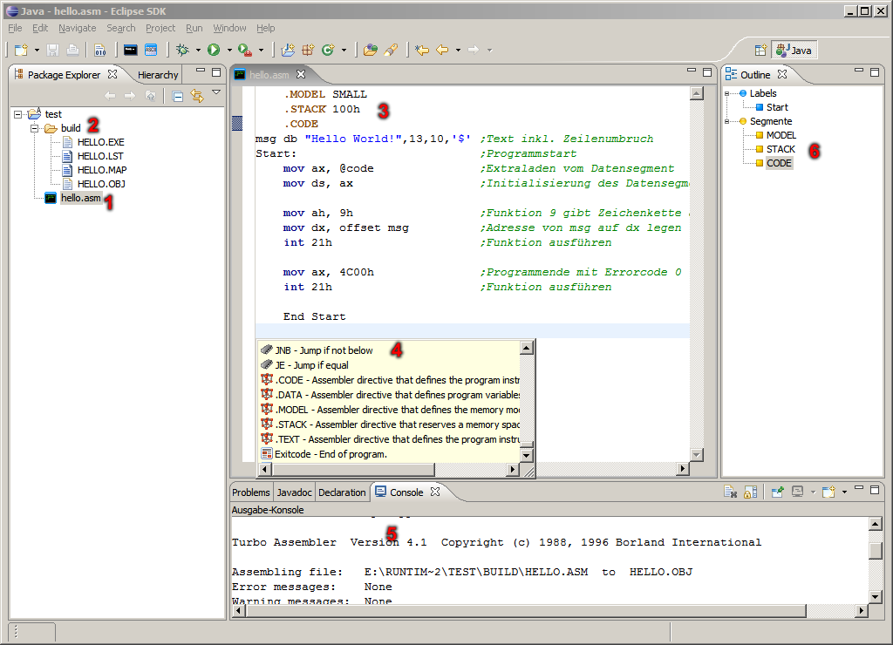

ASM Plug-In - ASM Editor
Hier werden die Funktionen des Editors bzw. der IDE gezeigt, wenn eine ASM Datei geöffnet ist.

- Ausgewählte ASM Datei.
- Das Build-Verzeichnis, in ihm sind alle Ergebnisse vom Kompilier- und Linkprozess enthalten.
- Geöffnete ASM Datei im Editor.
Das Umschalten zwischen Text und Kommentar kann mit [STRG]+[7] bzw. [STRG]+[UMSCHALT]+[7] getätigt werden.
- Das Content-Assist kann mit [STRG]+[LEERTASTE] angezeigt werden.
- Die Ausgabe-Konsole enthält Informationen zum Kompilier- und Linkprozess.
- Die Gliederung enthält Verweise zu Prozeduren, Makros, Labels und Segmenten.